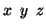
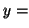

This flag is used to specify the centre of the rotations given after the rotate keyword. It must appear before the coordinates of the atoms.
Options:

Default: off, 0.0,

Example: centre 10.0 10.0 0.0